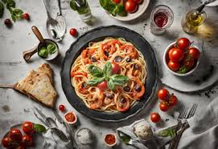

Cherry Tomato Pasta

Description
A bright and fresh tomato pasta that comes together quickly with only a handful of ingredients.
This makes a great base sauce to modify with your desired protein.
Ingredients
- 3-4 tablespoons Olive Oil plus more to taste
- 1/2 teaspoon red pepper flakes
- 3 cloves Garlic smashed but not chopped
- 2 pints Cherry Tomatoes
- 1/4 cup chopped basil plus more for garnish
- 1/4 Lb pasta shape of choice
Directions
-
Preheat a stainless steel skillet or saute pan over medium heat. Fill a separate sauce pan with enough
water to cover your pasta by an inch, salt liberally, and begin bringing to a boil.
-
Add oil and red pepper flakes to the skillet. Saute until the pepper is fragrant,
about one minute.
- Add garlic to skillet. Saute for about one minute until fragrant.
- Add tomatoes to skillet and raise the heat to medium high. At the same time add your pasta to the boiling water in the sauce pan.
- As the tomatoes begin to break down, periodically ladle water from the cooking pasta into the skillet about 1/4 cup at a time. This will help form the sauce.
-
Periodically check the pasta. Just before it is fully cooked, drain it, reserving some pasta water, and transfer to the skillet.
Toss or stir the pasta frequently, and add pasta water if the sauce becomes too tight.
-
Once the pasta is cooked to your liking, remove from heat. Add the basil and salt to taste. Plate and top with cheese, fresh cracked pepper, and basil.